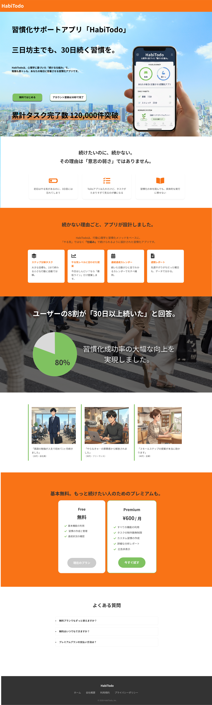
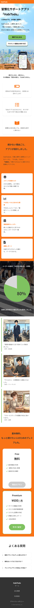

02
Bar LP — Snack mare
スナックバー「Snack mare」からご依頼いただいた実績LPです。17時から楽しめる大人の隠れ家というコンセプトをもとに、落ち着いたダークトーンで上質感を演出。スライダーや Googleマップの埋め込みなど、実用的な機能も実装しました。デスクトップ・スマホ両対応のレスポンシブデザインで制作しています。
figma
HTML / CSS
JavaScript

Landing Page
Original Works — 2025
架空のクライアントを想定したランディングページの制作実績です。FigmaでデスクトップとSP両方のデザインを制作した後、HTML / CSSで実装まで行っています。
01
「三日坊主を卒業したい」20〜30代向けの習慣トラッカー＋ToDoアプリ「HabiTodo」の架空LPです。続けることへの前向きなエネルギーを伝えるため、オレンジとグリーンの明るい配色を採用。モックアップ画像やユーザーイラストを活用し、使用イメージが直感的に伝わるレイアウトを意識しました。デスクトップ・スマホ両対応のレスポンシブデザインで制作しています。


02
スナックバー「Snack mare」からご依頼いただいた実績LPです。17時から楽しめる大人の隠れ家というコンセプトをもとに、落ち着いたダークトーンで上質感を演出。スライダーや Googleマップの埋め込みなど、実用的な機能も実装しました。デスクトップ・スマホ両対応のレスポンシブデザインで制作しています。